Design Software Systems Like a Senior Engineer
Hayk Simonyan's three-hour freeCodeCamp course on system design interviews: a repeatable five-step framework, the five dimensions interviewers actually score, and three complete designs — a Spotify-like music platform, a Booking.com-like hotel reservation system, and a WhatsApp-like messenger — each taken from vague requirements to scaled, failure-proofed architecture.
Contents · 13 sections
Original course
Design Software Systems Like a Senior Engineer – Complete Course — published by freeCodeCamp.org (October 2026), course developed by Hayk Simonyan. Timestamp labels throughout this guide (e.g. 0:57:31) refer to the recording; each system chapter opens with a link that opens YouTube at the matching moment.
Chapter timestamps below follow the official chapter list in the video description, cross-checked against the transcript and the on-screen slides. All diagrams in this guide are screenshots of the course's own whiteboard and slide frames.
TL;DR — the whole course in 12 lines
- System design is evaluated on five dimensions, not one. Communication, structured thinking, technical judgment, practical depth, and time management — the architecture you draw is only the technical-judgment slice 0:04:24
- Requirements are vague on purpose. Unlike a coding round, there is no single right answer; the interview tests how you think, and it is your job to lock in the scope 0:03:50
- Five steps, sixty minutes: clarify requirements (~10 min) → data + APIs (~20 min) → architecture (~15 min) → scale & edge cases (~10 min) → wrap-up with trade-offs (~5 min) 0:09:14
- Treat the interviewer as a colleague, not an examiner: check in after each phase, propose multiple approaches, and justify every choice — choosing SQL silently reads as not knowing why 0:19:15
- Estimate before you design. Spotify-like: 30M songs × 3 MB ≈ 90 TB — audio dominates everything. Booking-like: 1.1B room-nights/year ÷ 2 nights ≈ 17 bookings/s vs ~1,000 reads/s — a read-heavy system with a consistency-critical write path 0:26:30
- Start simple, scale deliberately: CDN edges, stateless API servers, leader/follower reads, then sharding — only when the numbers demand it 0:44:37
- The double-booking bug is the heart of the reservations design:
READ COMMITTEDisolation leaves a check-then-act gap;SELECT … FOR UPDATErow locks close it without serializing the whole database 1:33:05 - PostgreSQL stays the source of truth; Elasticsearch is a search index kept eventually consistent via change data capture (WAL → Debezium → Kafka → index updater) 1:40:41
- Chat is a stateful problem: persistent WebSockets beat polling and long polling; a message queue decouples the instant “sent” ack from durable storage 2:03:41
- Never funnel media through chat servers — pre-signed URLs let clients upload straight to blob storage and download from a CDN, or 100 uploaders can crush a 100,000-connection server 2:28:38
- Design the failures, not just the happy path: Redis dies → fall back to the inbox table; Kafka dies → buffer locally, replay later; batch writes give 100× throughput 2:59:54
- The senior pyramid: planning (requirements, capacity, architecture) is the wide base, tech selection sits above it, and coding is the small tip — AI already does the tip faster and cheaper 0:48:40
The interview game — formats and the five dimensions
Why this round exists 0:00:00
Most engineering roles today expect system design knowledge — for the job itself, and especially for interviews. For senior and staff positions it is often one of the deciding factors. The speaker argues it is increasingly required for mid-level too: when everyone uses AI to write code, companies want to know whether you understand the bigger picture — how components talk to each other, how to design from scratch, and how to discuss trade-offs.
Four interview formats 0:02:16
| Format | What happens |
|---|---|
| Whiteboard design (most common) | A 45–60 minute session where you design a full system or feature from scratch. |
| Bottleneck discussion | The company's existing infrastructure has problems; can you spot bottlenecks and suggest solutions, given basic system design knowledge? |
| Past-project walkthrough | Questions about your previous work to check whether you actually understand the architecture of what you built. |
| Conceptual questions | Depth checks on system design concepts themselves. |
Even if you know all the concepts, you need a framework to navigate a 45–60 minute discussion — that is what chapter 04 covers.
Why it feels harder than coding rounds 0:03:50
A live-coding round has clear inputs and outputs: you know the argument types, the expected return, and you can run the tests. System design is the opposite: requirements are vague — clarifying them is your job — and there is no single right answer. The interview tests how you think, not whether you found the solution.
The five dimensions you are actually scored on 0:04:24
Most candidates prepare by memorizing a couple of architectures. But architecture is only one of five things interviewers score:
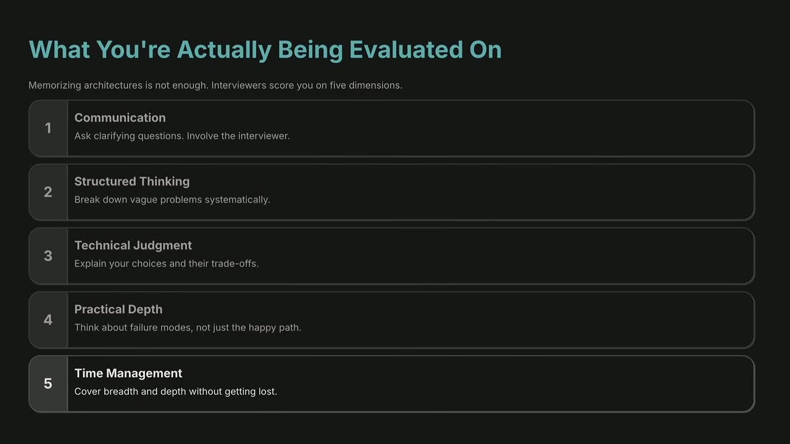
- Communication and collaboration. Do you ask clarifying questions and validate assumptions as you go, or silently assume and build? The interviewer is previewing what you'd do when a manager hands you a vague ticket.
- Structured thinking. Can you break a vague problem into outlined steps, or do you jump between random decisions and revisit earlier phases?
- Technical judgment. When you pick a database, a cache, or a queue, can you explain why that one — chosen from requirements, not habit or name recognition?
- Practical depth. Two candidates can share theoretical knowledge; the one who has shipped production systems thinks about failure modes and scale unprompted. This is where interviewers separate builders from readers.
- Time management. 45–60 minutes is short. Don't burn it all on high-level design; ask the interviewer early where they want depth, and track your own progress through the phases.
The five-step framework
A repeatable structure for any whiteboarding system design interview, calibrated for a 60-minute session (the more common length, because there is a lot to cover):
| Step | Budget | What you produce |
|---|---|---|
| 1. Clarify requirements | ~10 min | Functional and non-functional requirements; explicit in/out of scope. |
| 2. Data + APIs or architecture first | ~20 min | Entities, keys, indexes; API contracts; the database choice and its trade-offs. |
| 3. High-level architecture | ~15 min | Components, data flows for reads and writes, consistency choices. |
| 4. Scale & edge cases | ~10 min | Bottlenecks, single points of failure, fallbacks, redundancy, monitoring. |
| 5. Wrap up | ~5 min | Key decisions, sacrifices, and how you'd extend the system at 10×. |
Steps 2 and 3 can go in either order — data-first if mapping entities helps you see the system, architecture-first if imagining the user flow is easier. The speaker personally starts with high-level design but sometimes switches. Whichever you pick, say so and move deliberately.
Step 1 — Clarify requirements 0:10:49
The most common candidate mistake is designing anything before the scope is locked. Two buckets:
- Functional: the main use cases, what is explicitly out of scope, who the users are, and what platform you're building. You can never design all of Spotify in 60 minutes — real versions take multiple teams months or years — so pick the core use cases and name what you're leaving out.
- Non-functional: the constraints — daily/monthly active users, read-to-write ratio, latency targets, acceptable downtime (availability).
End the phase with a check-in: “Does this scope and these requirements make sense before I move to high-level design?” If the interviewer gives you a hint, you missed something — fix it now, not after drawing the architecture.
Step 2 — Data model and API layer 0:13:52
- Entities and relationships: for YouTube it would be videos and users; map primary keys, foreign keys, and key indexes, and how big each record gets.
- Consistency split: call out which data needs strong consistency and where eventual is acceptable.
- API contracts: main endpoints with request/response formats; mention pagination, error handling, rate limiting, versioning, and REST best practices.
- Database choice: PostgreSQL, MongoDB, whatever — explain why given the requirements, and name the alternatives you rejected.
Step 3 — High-level architecture 0:15:21
If nothing comes to mind, start with the four components present in almost every system: API servers accepting requests, a load balancer distributing traffic, a database for persistence, and optionally a cache for hot data. Then map the user journey end to end: front end → API gateway/load balancer → stateless API servers (maybe message queues decoupling services) → database — and walk the read and write paths out loud.
If you use caching, name the TTL and the invalidation mechanism. And for different components, reason about the CAP triangle 0:15:21 — some parts of your system may be CP, others AP, and explaining that per component shows you understand the trade you're making. (The auto-transcript renders this as “CP theorem”; the concept is Brewer's CAP theorem — consistency, availability, partition tolerance — see the author's retrospective.)
Step 4 — Bottlenecks, scale, and reliability 0:16:51
“One of the clearest signals that separates a mid-level candidate from a senior one”: show you can think about what breaks under load, not just the happy path.

Step 5 — Trade-offs and extensions 0:18:24
Usually an open-ended prompt: what could be improved? Summarize the key decisions, what you prioritized, and what you sacrificed — always with the why. Then propose extensions: if load grew 10×, what changes? You cannot produce a perfect design in 60 minutes and you're not expected to; the goal is to show you know how it would evolve.
Interview dos and don'ts
| Don't | Do instead |
|---|---|
| Jump straight into a solution | Clarify scope first — designing before understanding is an immediate red flag. |
| Silently draw diagrams, or fill every silence with talk | Treat the interviewer as a colleague working the problem with you; invite their opinion after each major decision. |
| Pick SQL (or anything) without saying why | Name the alternative and the trade-off even when the choice is obvious — if you don't explain, the interviewer assumes you don't know. Payment system → consistency matters → SQL over NoSQL, say that out loud. |
| Move on without checking in | After each phase: “Did I cover what you were looking for here? Anything I missed?” |
| Run out of time mid-design | Track the clock per phase; ask early where the interviewer wants depth. |
System #1 — music streaming (Spotify-like)
A classic mid-level problem because it touches audio delivery, metadata management, object storage, and everything in between. The course runs it in seven steps: requirements → capacity → architecture → read/write flows → API → storage → scale.
Requirements and scope 0:24:44
- Scale given: ~500,000 users, ~30 million songs.
- Core use cases: artists upload songs; users search and play songs; users create and manage playlists; user profiles; basic monitoring/observability (health checks, error tracking, performance metrics).
- Audio formats: OGG and AAC — compressed without noticeable quality loss. Bitrates: 64 kbps for data-saving mobile, 128 kbps standard, 320 kbps premium. Average file at standard quality: 3 MB. (These are the course's teaching numbers — real libraries vary; OGG/AAC are lossy formats per Xiph.org's Vorbis documentation and the MPEG AAC standard.)
Capacity planning 0:26:30
| Quantity | Estimate | Reasoning from the course |
|---|---|---|
| Song storage (raw) | 90 TB | 30M songs × 3 MB. Multiply by 2–3× for cross-region replicas and artist re-uploads (versioning overhead). |
| Song metadata | ~3 GB | ~100 bytes/song (title, artist refs, duration, file URLs) × 30M — negligible next to audio. |
| User metadata | ~0.5 GB | ~1 KB/profile × 500K users. |
| Daily bandwidth | egress-heavy | ~3.5 min average listen; 3–4 MB per stream at 128–160 kbps; 10–15 streams/user/day → significant egress costs (cloud fees for data leaving the network). |
High-level architecture 0:29:24
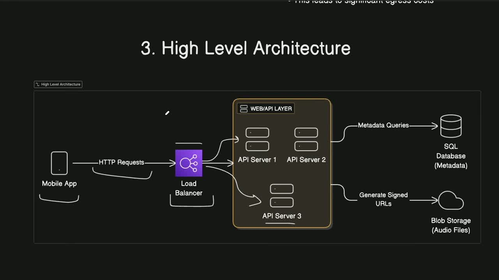
Why blob storage (e.g. Amazon S3) for audio: the files are the bulk of the system; object storage offers virtually unlimited scalability, built-in durability, and cost effectiveness for large files. Why SQL for metadata: the relationships (playlists ↔ songs ↔ artists) demand joins.
Read flow — playing a song 0:31:24
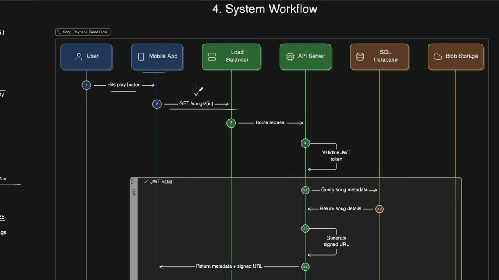
GET /songs/{id} → load balancer routes → JWT validation → SQL metadata lookup → signed URL generation → metadata + URL returned to the app. 0:31:40- User hits play; the app issues
GET /songs/{id}. - Load balancer routes to an API server, which validates the JWT.
- The server queries song metadata from SQL, generates a signed URL for the audio, and returns both.
- The app issues range requests for audio chunks directly to blob storage with the signed URL, and playback streams.
- Analytics fire separately:
POST /songs/{id}/playrecords the play event. Invalid JWT → authentication error and none of the above happens.
Write flow — artist uploads a song 0:32:55
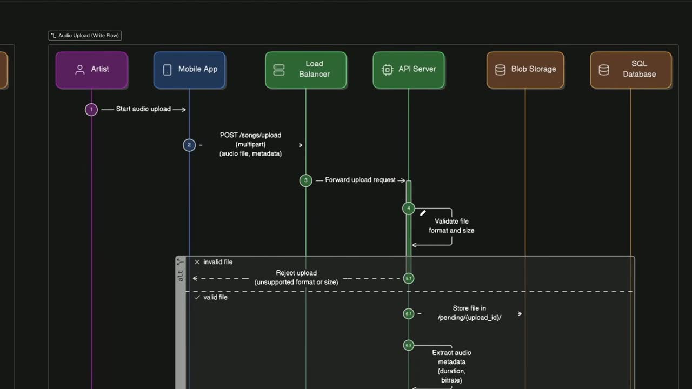
/pending/{upload_id}/ staging prefix before metadata extraction. 0:33:05After validation: store the audio in blob storage, extract technical metadata (duration, bitrate) to complement the form metadata (title, artist), insert the song row into SQL, optionally organize the object under an artist/album prefix, and invalidate CDN caches so users see new uploads immediately. The CDN caches artist pages, album metadata, and song details close to users; invalidation clears stale copies. Finally the app receives the success response.
API design 0:35:23
| Purpose | Endpoint | Notes |
|---|---|---|
| Search | GET /search?q=&type=song&limit=20&offset=0 | Pagination via limit/offset; optional type filter. |
| Trending | GET /songs/trending?genre=&limit= | Optional genre filter. |
| Artist catalog | GET /artists/{id}/songs?limit= | Songs belonging to one artist. |
| Song detail | GET /songs/{id} | Metadata + streaming (signed) URL. |
| Direct streaming | GET /songs/{id}/stream | Alternative to signed URLs. |
| Playlist detail | GET /playlists/{id}?include_songs=true | Optionally embed the song list. |
| Create playlist | POST /playlists | Body: name, public/private. |
| Add songs | PUT /playlists/{id}/songs | Body: song IDs + insertion position. |
| Remove song | DELETE /playlists/{id}/songs/{song_id} | Sub-resource delete. |
| Like a song | POST /songs/{id}/like | Maintains the user's favorites. |
| My playlists | GET /users/me/playlists?limit=50 | Limit for large collections. |
| Liked songs | GET /users/me/liked-songs?limit=&offset= | Use plural nouns consistently — REST naming hygiene. |
| Follow artist | POST /users/me/follow | Body: artist ID; powers new-release notifications. |
Storage and schema 0:39:40
Blob storage layout: audio files are immutable — to change one you re-upload and remove the old object. Organize with a hierarchical prefix (an illusion object stores support, but useful):
/artist/{artistId}/album/{albumId}/{songId}.oggRelational schema (PostgreSQL or MySQL):
| Table | Key columns | Role |
|---|---|---|
users | id (PK), email, password_hash, created_at, last_login, subscription_type, country | Listeners; subscription drives audio quality. |
playlists | id (PK), owner_id (FK → users), name, created_at | One user owns many playlists. |
playlist_items | playlist_id (FK), song_id (FK), position, added_at | Join table: which songs, in what order. |
songs | id (PK), title, duration, file_url, … | Metadata; file_url points into blob storage. |
artists | id (PK), name, country, … | Kept separate from users. |
artist_songs | song_id (FK), artist_id (FK) | Join table: song ↔ artist. |
Why SQL: the workload is join-heavy (playlists↔songs, songs↔artists) and supports complex queries like “all songs by artists a user follows.” Indexes to add as data grows: songs.title (search with typos/partial matches), artists.name, and playlist_items.song_id (fast “songs in playlist” and “which playlists contain this song”).
Scaling to 50M users and 200M songs 0:44:37
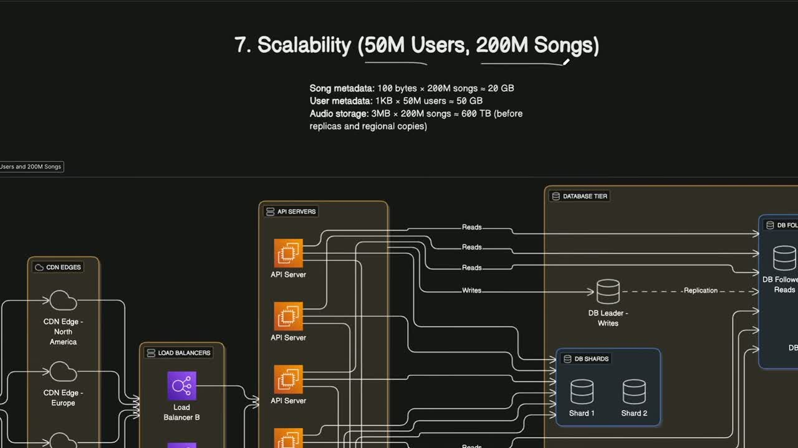
- CDN edges per region (North America, Europe, South America…) with an LRU eviction policy — least-recently-accessed content drops when the cache fills; misses fetch from origin.
- Regional load balancers mapping requests to API servers.
- Stateless API servers scale horizontally by pure replication — the design rule is to keep them truly stateless (no user sessions stored on-server) so scaling is trivial.
- Database reads scale first: one leader handles writes; follower replicas serve reads and stay in sync.
- Then shard: split by geography (US users, European users) and partition songs by artist-ID ranges — related data stays together, giving horizontal scalability.
- Replicate blob storage per region: European uploads land in the European bucket; signed URLs still gate every stream.
The pyramid that separates seniors from mid-level 0:48:40
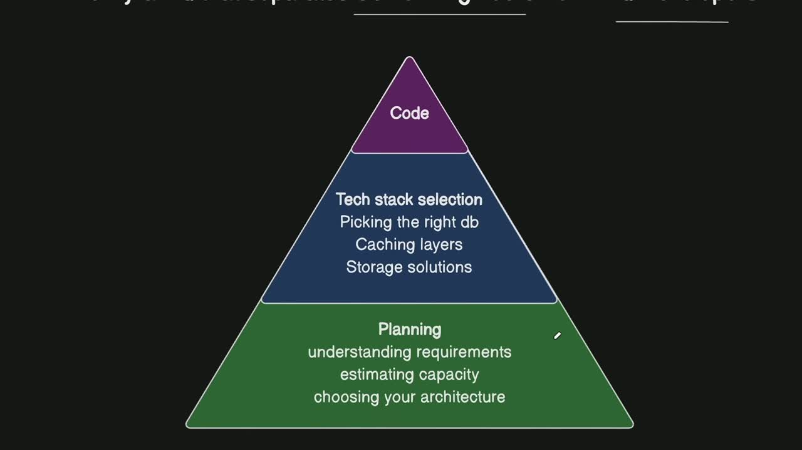
System #2 — hotel reservations (Booking.com-like)
The classic senior-level trap. Treating reservations like a generic CRUD app with caching “works” until two users book the last room at the same moment: a naive select-then-insert double-books, two cards get charged for one room, and you're issuing refunds to angry customers. The skills under test: concurrency under load, consistency across systems, and designing for failure — understanding the actual problems, the solutions, and the trade-offs between them.
Clarifying the problem 0:53:17
| Question | Decision in the course |
|---|---|
| Payments on-platform or at check-in? | On-platform → integrate a payment system. |
| Web only, or mobile too? | Both (mobile may carry different rates/pricing). |
| Cancellations and overbooking? | Yes — hotels overbook by ~5–10% expecting cancellations. |
| Fixed or dynamic pricing? | Dynamic — demand and dates drive prices (Christmas week triples rates). |
| Admin panel for hotel management? | Yes, but the core revolves around users booking and cancelling. |
| What is the irreducible core? | A useful test: “what could we remove before it stops being Booking.com?” Search by location/dates/guests/price is core; the reservation flow must view, book, cancel, and prevent double bookings; payments integrate Stripe/PayPal; notifications for confirmations to users and property owners. |
Non-functional targets 0:57:31
- Strong consistency for bookings — two users must never book the same room for the same dates. “Non-negotiable.’ Search/discovery can be eventually consistent.
- High concurrency — thousands of users hitting the same hotel simultaneously without breaking.
- Latency: search results under 500 ms; booking confirmations within 2–3 seconds are fine.
- Availability 99.9%+ and horizontal scalability — grow without redesigning. (The auto-transcript garbles this as “free 9 uptime”; the on-screen slide reads “High Availability: 99.9%+ uptime,” verified at 0:57:50.)
Capacity math: the funnel 0:58:22
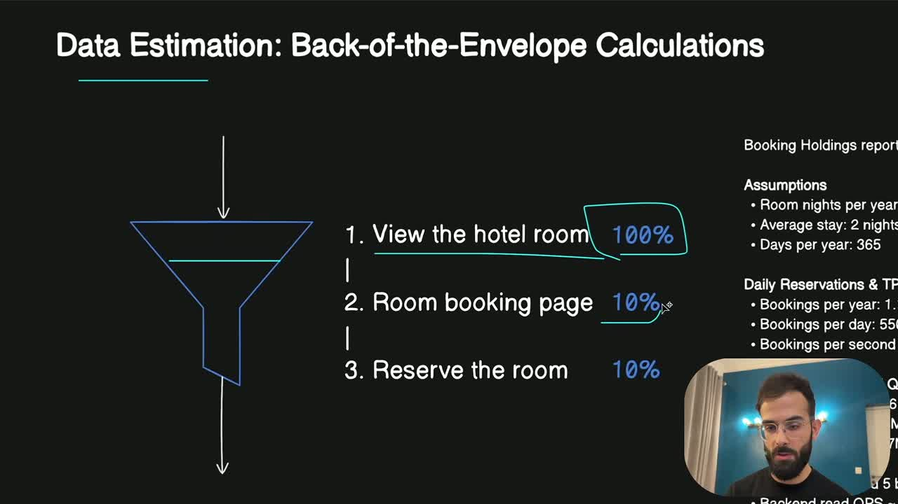
Two ways in — get either number from the interviewer and derive the rest:
- Top-down: look up monthly visits (e.g. ~500M/month for booking.com via a tool like SimilarWeb) and compute downward.
- Bottom-up: start from reservations per year — 1.1 billion room-nights for Booking.com (the slide cites Booking Holdings' reports; their FY2024 release reports 1,144M room nights, and the company factsheet reports ~1.2B for 2025).
The writes (TPS): 1.1B room-nights ÷ 2 nights/booking = 550M bookings/year ÷ 365 = ~1.5M bookings/day ÷ 86,400 s = ~17 bookings/second.
The reads (QPS): 500M visits/month ÷ 30 ≈ 17M visits/day ÷ 86,400 ≈ 200 visits/second; × ~5 backend reads per visit (search queries, availability checks) ≈ 1,000 reads/second.
High-level architecture 1:04:18
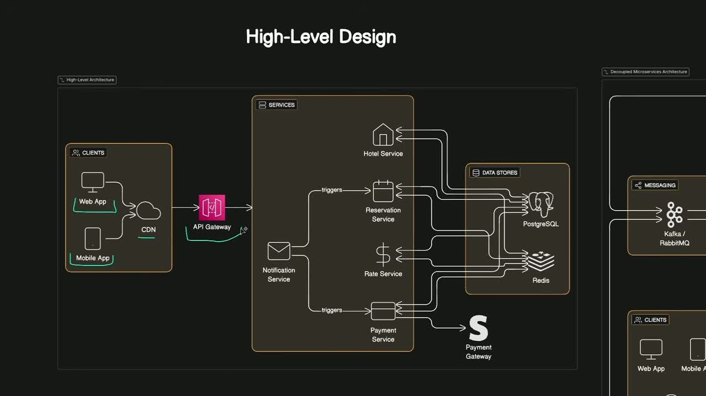
- Search at 1,000 QPS: PostgreSQL alone won't carry it → add a search service backed by Elasticsearch: full-text search over names/descriptions, geo-filtering (“within 5 km”), price/rating filters, eventually consistent with the database.
- Decoupling with a queue: when a payment succeeds, publish an event (Kafka/RabbitMQ); consumers send email/push notifications and update hotel availability in the search index. Right after payment a user might still see the room “available” in search — but booking re-checks the database, so they can't actually double-book.
API design and idempotency 1:11:02
RESTful endpoints throughout (the course notes a GraphQL gateway in front of microservices is a common alternative that hides routing from the front end). Listing uses Elasticsearch; single-hotel reads come from PostgreSQL; writes go to PostgreSQL first and propagate to the index eventually.
| Purpose | Endpoint | Behavior |
|---|---|---|
| List hotels | GET /v1/hotels?filters… | Query Elasticsearch for filtered results. |
| Hotel detail | GET /v1/hotels/{id} | Read from PostgreSQL; forward details to the front end. |
| Create / update / delete hotel | POST /v1/hotels, PUT|PATCH /v1/hotels/{id}, DELETE /v1/hotels/{id} | Admin flows; insert/update/delete in SQL, confirm immediately, Elasticsearch catches up eventually. |
| Rooms (sub-resource) | GET|POST /v1/hotels/{id}/rooms, PUT|DELETE /v1/hotels/{id}/rooms/{room_id} | Standard nested REST; handle and surface failures. |
| Reservation history / detail | GET /v1/reservations, GET /v1/reservations/{id} | Read from SQL; include the invoice. |
| Create reservation | POST /v1/reservations | With an idempotency key — see below. |
| Cancel | DELETE /v1/reservations/{id} | Check the cancellation policy first (a week out: allowed; last minute: not) → confirm or decline. |
| Change dates | PUT /v1/reservations/{id} | Price difference becomes a second transaction (charge or refund). |
| Search | GET /v1/search?location&check_in&check_out&guests&price… | Query Elasticsearch, not the database — speed is the point. |
Idempotency — stopping the double-click double-book: the front end generates a reservationId (a UUID) when the user opens the form; repeat submissions carry the same key, and the back end returns the existing reservation instead of creating a second one:
{
"reservationId": "uuid-13422445",
"roomTypeId": "12354673389",
"hotelId": "245",
"startDate": "2024-12-15",
"endDate": "2024-12-18",
"guestCount": 2,
"roomCount": 1
}
// reservationId is generated on the frontend and
// prevents double bookings when users click submit
// multiple timesA backend-only alternative: hash hotel_id + room_id + user_id + date and block on a hash match — but that also blocks a future legitimate booking of the same room by the same user, so the course prefers the lightweight client-generated UUID when only the double-click case matters. The cross-user double-book needs the concurrency control in the next-but-one section.
Data model and inventory logic 1:22:34
The pivotal modeling decision: you book a room type, not a specific room — room numbers are assigned at check-in. Schema highlights:
| Table | Key columns | Why it exists |
|---|---|---|
hotels | id, name, address, location, description | Same-brand properties = same name, different IDs; a hotel_groups helper table can group brands. |
room_types | id, name, description, capacity, hotel_id | One hotel → many room types (1:N). |
room_type_rates | room_type_id, rate multipliers | Base package 100/night, better view 150, breakfast included 200 — one room type, many rates (1:N). |
rooms | room_id, floor, available, room_type_id, hotel_id | The physical rooms assigned at check-in; available tracks status. |
room_type_inventory | hotel_id, room_type_id, date (composite PK), total_inventory, total_reserved | One row per hotel + room type + day. Pre-populate two years ahead; a daily cron adds new dates. Enables bulk availability updates, scalable pricing/search, and simple overbooking. |
reservations | reservation_id, room_type_id, hotel_id, guest_id, start_date, end_date, status, room_count | Guests table holds bookers; one guest → many reservations (1:N). |
transactions | transaction_id, reservation_id, transaction_type (new/change/refund), amount (±), transaction_date | Deliberately separate: book (charge), change dates (charge or refund the difference), cancel (negative amount) — one reservation, many transactions. |
Availability check: sum inventory rows across the stay window and compare:
SELECT date, total_inventory, total_reserved
FROM room_type_inventory
WHERE hotel_id = ?
AND room_type_id = ?
AND date BETWEEN ? AND ?;
-- booking is allowed when, for every date:
-- total_reserved + rooms_to_book <= total_inventory
--
-- example: total_inventory = 100, total_reserved = 92
-- 92 + 1 <= 100 → allow
--
-- overbooking: with a 10% policy, treat the limit as
-- 110 — the overbooked rooms are expected to free up
-- through cancellations before the date arrivesConcurrency: why double bookings happen 1:33:05
The same-user double-click is already solved by the idempotency key. The dangerous case is two different users booking the last room of a type simultaneously. PostgreSQL's default isolation level is READ COMMITTED (per the official documentation), and the course traces the race:
Time 3: User A checks: (99 + 1) <= 100 ✓
Time 4: User B checks: (99 + 1) <= 100 ✓
Time 5: User A updates: total_reserved = 100 ✓
Time 6: User B updates: total_reserved = 100 ✗ — double bookedBoth transactions read valid committed data, both pass the check in the gap before either writes, and both overwrite each other. READ COMMITTED alone is unsafe for bookings. Two fixes:
| Approach | Pros | Cons |
|---|---|---|
SERIALIZABLE isolation | Simple — set it when beginning the transaction. Fine at low TPS. | Transactions block each other; doesn't scale with write volume; risks deadlocks when locking multiple resources in different orders (mitigate with lock_timeout and short transactions). |
READ COMMITTED + SELECT … FOR UPDATE row locks | Locks only the inventory rows being booked; other hotels/dates proceed fully in parallel. The course's preferred fix. | Contention concentrates on genuinely contested rows (which is exactly where you want it). |
BEGIN TRANSACTION ISOLATION LEVEL READ COMMITTED;
SELECT date, total_inventory, total_reserved
FROM room_type_inventory
WHERE hotel_id = 211
AND room_type_id = 1001
AND date BETWEEN '2024-12-23' AND '2024-12-27'
ORDER BY date
FOR UPDATE; -- locks these rows until COMMIT
-- Check availability in application
-- Update if available
-- Insert reservation
COMMIT;FOR UPDATE serializes access to those specific rows: a second transaction booking the same rows waits its turn; everyone else proceeds. (See PostgreSQL's row-level locking reference for the exact semantics.)
Sharding and caching 1:34:44
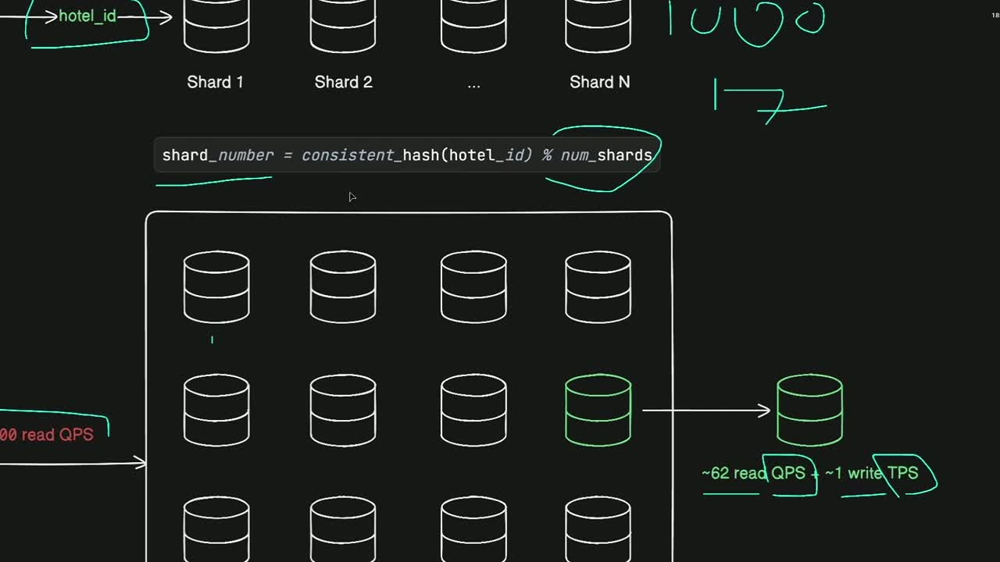
hotel_id: queries filter by hotel first, so all of one hotel's data — and all joins and local transactions — stay on one shard. Sixteen shards leave each with ~62 reads/s and ~1 write/s. 1:37:36Modulo vs consistent hashing: start with hash(hotel_id) % num_shards when the shard count is stable. Adding shard #17 under modulo reshuffles nearly all the data; with consistent hashing (servers and keys mapped onto a hash ring; each key belongs to the next server clockwise) adding a server moves only ~1/17th of the keys. Many shards that change often → consistent hashing; few stable shards → modulo is fine.
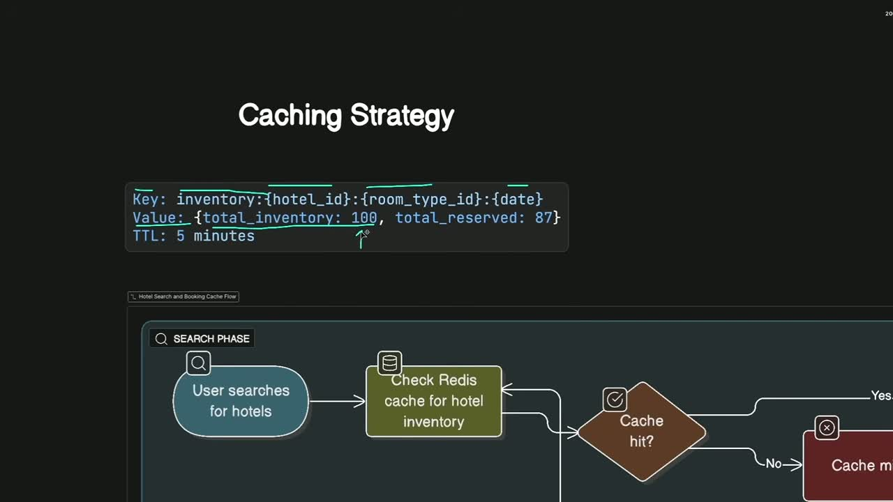
Search at scale: why not just PostgreSQL? 1:40:41
Relational databases are great at “give me the row where id = 123” and ACID writes. Search is a different workload:
SELECT * FROM hotels
WHERE location LIKE '%Paris%' -- slow full table scan
AND amenities LIKE '%wifi%' -- even slower
AND base_price <= 200
AND description LIKE '%luxury%'; -- kills performanceLIKE '%text%'forces a full table scan — no index helps.- No relevance ranking (which hotel is “most relevant”?).
- No typo tolerance (“Pari” should match “Paris”).
- Geospatial distance queries are clunky in plain SQL.
- Aggregations/facets (“count by price range”) are expensive.
Elasticsearch inverts each of these: it tokenizes queries, finds matching documents, ranks by relevance with a similarity algorithm (its default since version 5 is BM25 — a research note; the video says “one of these algorithms” without naming it), tolerates typos via edit distance, and handles geo distance and aggregations cheaply. Its documents are denormalized JSON — the hotel, its location, room types, amenities, and review counts condensed into one searchable document with no joins.
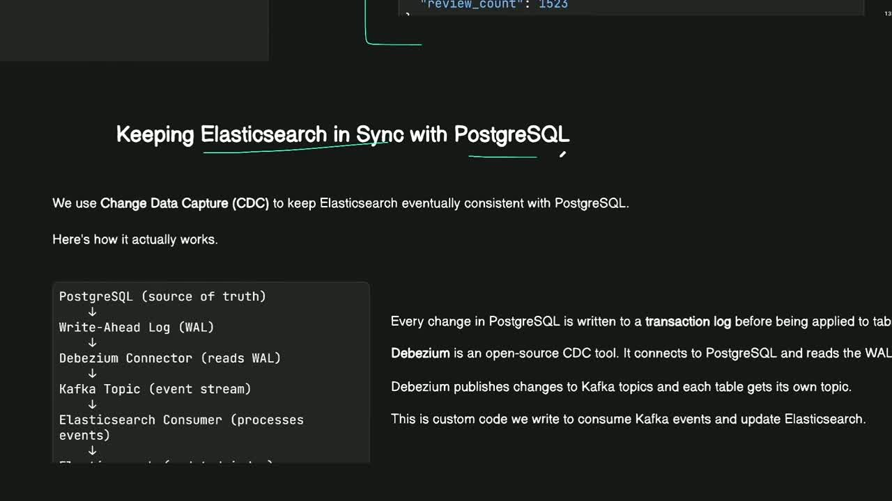
Replication and global routing 1:45:19
- Read replicas in different availability zones; applications pick a variable deciding primary vs replica: a recent write → read from the primary (the replica may lag); otherwise read from the closest replica.
- Geo-latency load balancing: European users book European hotels, US users US hotels — route by region (a US user booking Paris is the exception, not the rule).
- Region-local caches and search indexes: US Redis caches US hotels; each region gets its own Elasticsearch. But keep one primary per shard — multiple region-primaries would create write conflicts to reconcile, and at 17 TPS you don't need them.
System #3 — messaging (WhatsApp-like)
Messaging shows up constantly in senior/staff interviews because it forces stateful connections, real-time delivery, offline delivery, multi-device sync, and failure handling — in one session you must show you understand what happens to messages flying between disconnected users on unreliable mobile networks. The course builds a simple version for a few thousand users, scales it to billions, then identifies where it breaks and how to fix it.
Requirements 1:53:18
- Core: 1:1 messaging; group chats up to 100 participants; delivery when the recipient is offline; media attachments (images, video, voice notes); message statuses (sent → delivered → read); online/last-seen presence.
- Non-functional: under 500 ms delivery when online; guaranteed delivery (messages never silently vanish); billions of users with high throughput; minimal server-side retention (messages cleared once delivered); resilience when individual components fail.
Scale estimates 1:56:38
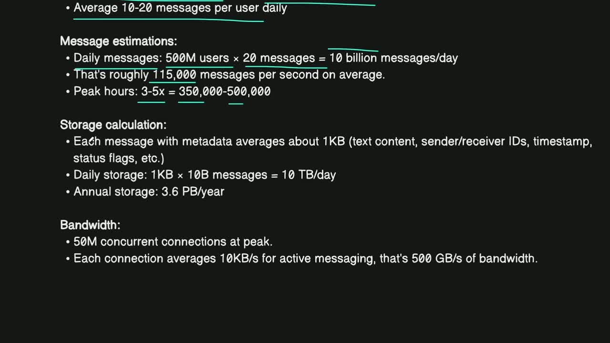
Retention assumptions: 30 days for undelivered messages, and only ~10% of users keep history on servers — users download messages to their devices and back up (e.g. to Google Drive) themselves. That efficiency is what lets messaging run on comparatively minimal infrastructure.
Architecture 1:58:15
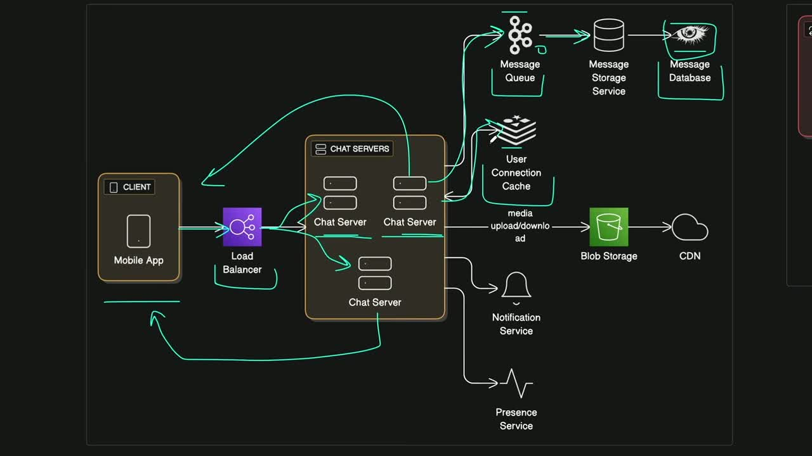
| Component | Choice | Why |
|---|---|---|
| Chat servers | Stateless WebSocket servers behind an LB | Persistent two-way channels; route messages; track presence; handle persistence via the queue. |
| Message queue | Kafka or RabbitMQ | Decouples writing from delivery: ack the sender instantly, persist and route asynchronously — also the backbone of failure handling. |
| Message storage | Cassandra or DynamoDB | Massive write throughput (billions/day); query patterns are simple — by user, conversation, timestamp. |
| User connection cache | Redis | Who is online, on which server, last activity. Microseconds vs milliseconds for a DB lookup — decisive at this scale. |
| Media storage + CDN | S3 / Google Cloud Storage + CDN | Hold files; cache popular media at edge locations worldwide. |
| Notifications | Apple Push (APNs) / Firebase (FCM) | Reach offline users; they read the message when they open the app. |
| Presence service | Dedicated service | Receives heartbeats, updates Redis, publishes presence changes to interested subscribers. |
Transport: polling vs long polling vs WebSockets 2:03:41
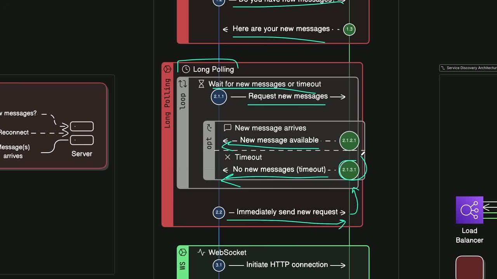
WebSockets win for chat: one persistent bidirectional connection — after the initial HTTP request and handshake, client and server can both push at any time. Trade-offs: load balancers must support WebSockets (layer 4 rather than layer 7), and open connections use more server memory — worth it for real-time delivery. (WebSocket protocol: RFC 6455; API overview: MDN.)
Service discovery 2:07:44
Chat servers come and go — crashes, deploys, scale-up/down. A service registry (Consul or AWS Cloud Map) tracks them: each server registers on boot; health checks run every ~10 seconds; the load balancer queries the healthy list and prunes its routing table, so dead servers stop receiving traffic. (Consul documentation.)
Data model 2:09:00
| Store | Contents |
|---|---|
users (PostgreSQL) | id (PK), phone (unique), username, created_at, last_seen (drives “last seen” display). |
messages (Cassandra) | message_id (PK), sender_id, receiver_id (FKs to users), content, media URL, status (sent/delivered/read), delivered timestamp, deleted flag. Lives in the high-volume store, not SQL. |
groups + group_members (PostgreSQL) | group id, name, created_at, created_by; members with group_id, user_id, role, joined_at (1:N). |
| Connection registry (Redis) | user_id → server_id, connection_id, last_active, device_type — refreshed with each heartbeat (~300 s). |
WebSocket + REST flows 2:12:00
- Auth: client sends user_id + token + device info; server replies with session id, server time, and unread count.
- Send: client sends receiver, content, media, timestamp over the established socket; the server acks and independently pushes new messages and delivery/read receipts to whichever device is connected.
- Read receipts: opening the message sends
readwith message ID + timestamp; the server propagates it so the sender sees the ticks change. - Presence heartbeat: both directions every 5–10 s — the client checks the server is alive, the server notices when the app or tab has closed, and closes the connection to stop wasting bandwidth.
- Media over REST:
POST /api/media(file type, size, file, conversation) → server returns an upload URL + media ID + expiry → client uploads directly to storage → success ack, or a delivery-failed error surfaces.
Multi-device sync 2:13:10
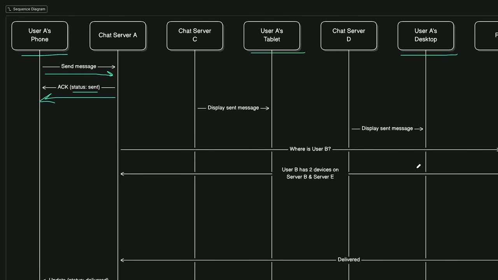
- Redis knows which devices each user has and which chat server each device uses; the sending server syncs the message to the sender's other devices and routes to the recipient's devices.
- Conflict resolution: last-write-wins with version numbers — the course flags this as not ideal, but workable for chat state.
- Incremental sync: a new device requests roughly the last 30 days; older history loads on demand as the user scrolls, and very old messages live in cold storage, fetched lazily. Shipping full history to every new device would be prohibitively expensive.
- Trade-off: multi-device roughly doubles the delivery workload — every message goes to multiple devices per user. Users demand it anyway.
Message flows: online, offline, and groups 2:20:19
Both online: server A generates a time-based message ID and acks sent → pushes to the message queue for persistence → Redis says user B is on server B → route via the Redis pub/sub layer → server B delivers in real time → device acks → status becomes delivered → on open, read propagates the same way. Analytics/archival can be enqueued asynchronously alongside.

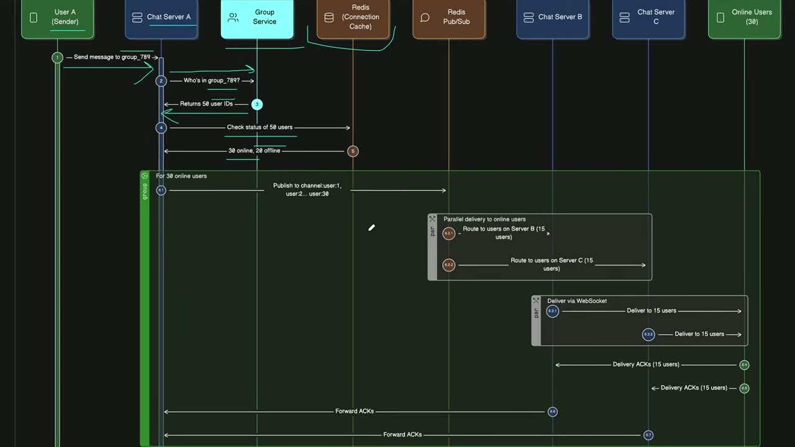
Media: pre-signed URLs, not proxies 2:28:38
The wrong way: client → chat server → database → recipient. Chat servers end up bandwidth-limited by file transfers — doing what they're terrible at (moving large blobs) instead of what they're good at (routing small messages fast). At this scale, a server handling 100,000 connections can be crushed by 100 users uploading megabyte files simultaneously.
![Diagram ‘Media Handling with Presigned URLs (Do it right)’: the anti-pattern on top (upload media file → chat server → store blob in database → read blob → download via server, labeled ‘Bandwidth bottleneck. Servers proxy large files.’), then the correct flow with numbered steps: request presigned UPLOAD URL, receive presigned URL + media_id, send message {media_url, recipient=B}, enqueue message event, deliver message {media_url}, message delivered, request presigned DOWNLOAD URL (media_id), presigned GET URL, CDN](assets/screenshots/19-media-presigned.jpg)
The CDN path adds one extra request round-trip but delivers massive performance and cost benefits at scale — the course calls it the clear winner. Media TTLs (~30 days) align with the message-retention policy so expired media is deleted automatically. (Pre-signed URL mechanics: AWS S3 documentation.)
Event-driven persistence: batch everything 2:33:32
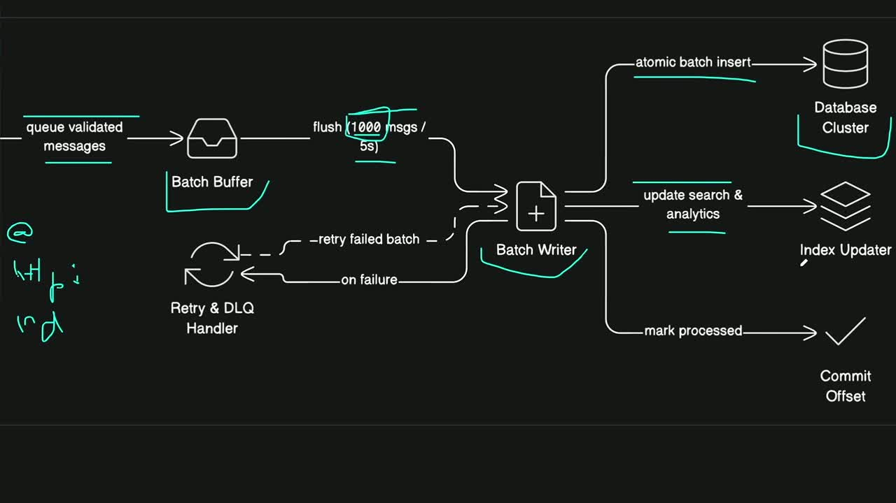
BEGIN BATCH
INSERT INTO messages (timestamp, sender_id, receiver_id, content, media)
VALUES (…, …, …, …, …);
INSERT INTO messages (…) VALUES (…);
-- …up to ~1,000 inserts for one batch
APPLY BATCH;Simplified from the on-screen Cassandra example; the video shows the batch shape rather than a full runnable program.
End-to-end encryption 2:41:14

- Registration: each user generates an identity key pair — the public key goes to the key server, the private key never leaves the device. Users also upload ~100 signed prekeys for future session initiators.
- Session setup: to message B, user A fetches B's public identity key plus one of B's prekeys, generates a matching key pair, and performs the key exchange — both ends now share session keys.
- Per-message protection: messages encrypt with the session key plus a message counter that increments on every exchange (
AES-256(message, session_key + message_counter), authenticated withHMAC-SHA256), so compromise of one key doesn't expose the whole history.
The video's flow is a deliberate simplification of the Signal protocol's X3DH key agreement — the real spec's “prekey bundle” (identity key, signed prekey, one-time prekeys consumed after a single use) matches what the course describes. Continued message protection comes from the Double Ratchet algorithm, which derives fresh keys per message; the course's “message counter” is a stand-in for the ratchet's per-message key derivation. One version note: Signal has since moved to PQXDH, a post-quantum variant of the same handshake, and WhatsApp documents its own deployment in the WhatsApp encryption overview. Treat the course's version as interview-level, not implementation-level.
Rate limiting and abuse prevention 2:44:49
Without limits, any hacker can scrape data or DDoS the system. Every action type gets a per-user limit — messages (~100/min), group creation (~5/hour), media uploads (~10–100/min) — with the numbers set during the blueprinting phase, not guessed:
class RateLimiter {
constructor(capacity, refillRate) {
this.capacity = capacity; // e.g. 100 messages
this.refillRate = refillRate;
this.tokens = capacity;
}
tryConsume(cost = 1) {
this.refill(); // top up based on elapsed time
if (this.tokens >= cost) {
this.tokens -= cost; // allow and deduct
return true;
}
return false; // over the limit → block
}
refill() {
const now = Date.now();
const elapsed = now - this.lastRefill;
this.tokens = Math.min(this.capacity,
this.tokens + (elapsed / 1000) * this.refillRate);
this.lastRefill = now;
// a blocked user waits until the window resets,
// e.g. "try again in 60 seconds"
}
}The video shows its own version of this code on screen; the listing above follows the narrated logic (capacity + refill rate, deduct-per-request, false when exhausted) and is labeled as a reconstruction rather than an exact transcription.
Enforcement flow: limit exceeded? → No → allow and continue (persist the message / media / group). → Yes → block the action → notify the user (“too many requests in one minute, try again in 60 seconds”) → optionally require a CAPTCHA.
Progressive penalties: first offense → warning; repeat → 1-hour restriction; again → 24 hours; still abusing → account suspended for human review (bot? hacker? confused user?), with a suspicious-activity tag and possible permanent ban on the next strike.
Other counters: connection-flood detection (five login attempts from different IPs in one minute → IP connection counter), and group-invite limits. All servers share one centralized store (Redis, ~24-hour retention) with atomic operations, so hopping to another server can't dodge the limit — the counter is global.
Database sharding: writes vs reads 2:52:06
| Strategy | Strength | Cost |
|---|---|---|
Shard by user_id | All of a user's messages on one shard → reads fetch a single shard. | Heavy users become hot shards; imbalance grows over time. |
Shard by message_id | Perfectly even distribution. | Every user read scatters across all shards, aggregates, then returns — slow and expensive. |
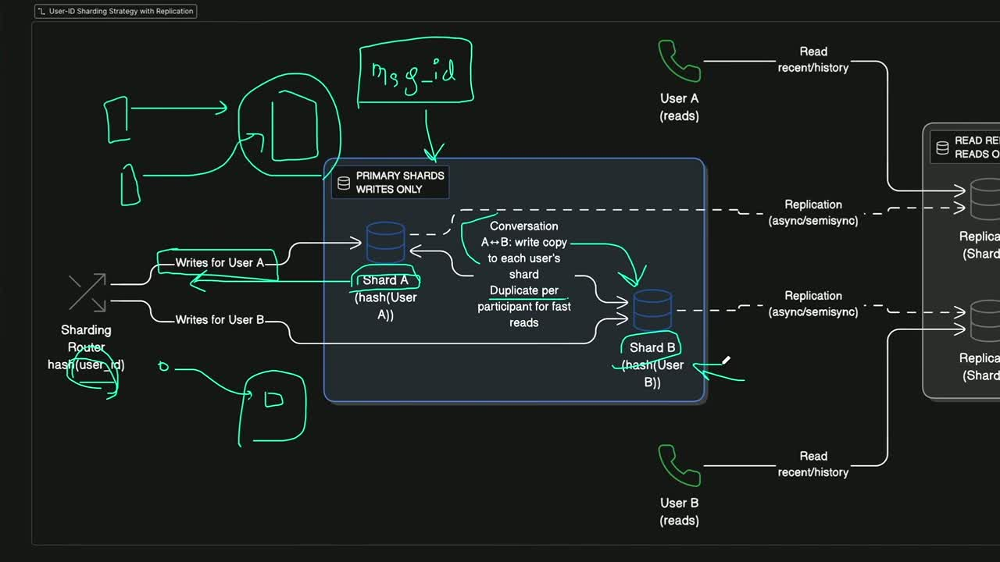
General rule from the course: sharding scales writes; replication scales reads. And the trade-off (2× write volume) is exactly why the requirements phase should pin down whether reads or writes matter more — if you forgot, ask the interviewer instead of guessing.
Cleanup jobs 2:57:53
Billions of messages and piles of media demand garbage collection: expired media, old undelivered messages, stale connections. A scheduler (Airflow or cron, daily/weekly) enqueues tasks into a job queue kept separate from the message queue; a pool of containerized workers executes cleanups, acks success, requeues failures, and reports job status to monitoring so the pipeline itself keeps improving. Trade-off: scheduled jobs add operational complexity (another thing to monitor and debug) — but the alternative is letting garbage accumulate until the system forces you to clean it anyway.
Failure handling: the cache dies 2:59:54
Redis holds the undelivered-message inboxes — so what happens when the Redis cluster itself goes down? The design already writes every inbox entry to both Redis (fast path) and the database (durable safety net):
async function storeUndeliveredMessage(userId, message) {
try {
// Try Redis first (fast path)
await redis.zadd(`inbox:${userId}`, message.timestamp, JSON.stringify(message));
} catch (redisError) {
// Redis is down, log it but don't fail
logger.error('Redis unavailable, using database only', redisError);
}
// Always write to database (safety net)
await db.query(
'INSERT INTO message_inbox (user_id, message_id, sender_id, message_payload, created_at) VALUES ($1, $2, $3, $4, NOW())',
[userId, message.id, message.senderId, message]
);
}async function getUndeliveredMessages(userId) {
try {
// Try Redis first (fast path)
const messages = await redis.zrange(`inbox:${userId}`, 0, -1);
if (messages.length > 0) {
return messages.map(m => JSON.parse(m));
}
} catch (redisError) {
// log for tracing (e.g. in CloudWatch), then fall through
}
// Redis unavailable → read from the database instead:
// slower, but far better than failing the whole operation
return db.query('SELECT … FROM message_inbox WHERE user_id = $1 …');
}When Redis recovers, a background job rehydrates it — SELECT * FROM message_inbox WHERE delivered IS NULL, write each undelivered message back into the Redis inbox, keep the database records — and normal delivery resumes (write Redis, read Redis). The lesson generalizes: stale-but-available beats erroring; fall back to the slower durable path and log for tracing.
Kafka cluster failure 3:06:52
Inside a Kafka cluster, brokers are the servers; topics split into partitions, each with a leader and replicas; producers write to leaders. One broker dies: replace it, rejoin the cluster, and Kafka rebalances partitions over time. The whole cluster dies (rare): chat servers can't publish, the storage service can't consume, and messages risk being lost. Mitigations, in escalating order:
- Local in-memory buffer in the publish path: try Kafka → on failure, log and push to a bounded buffer (~100,000 messages; when full, drop the oldest) → poll for recovery (~2 s, matched against a known ~5 s cluster spin-up time) → republish on recovery.
- Append-only disk log: if the server itself dies while buffering, the buffer is also on disk; on recovery, replay the log and delete entries only after they publish successfully.
- Cluster restoration: once a new Kafka is provisioned, consumers request messages since last processed ID from the producers, query already-persisted messages from the database, republish exactly the missing ones, and resume normal consumption.
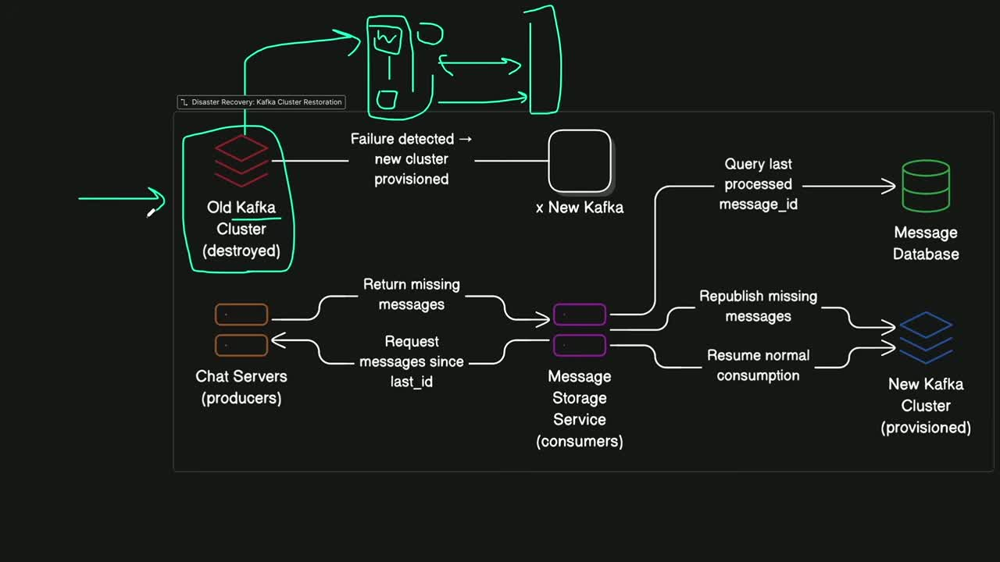
Global distribution 3:04:26
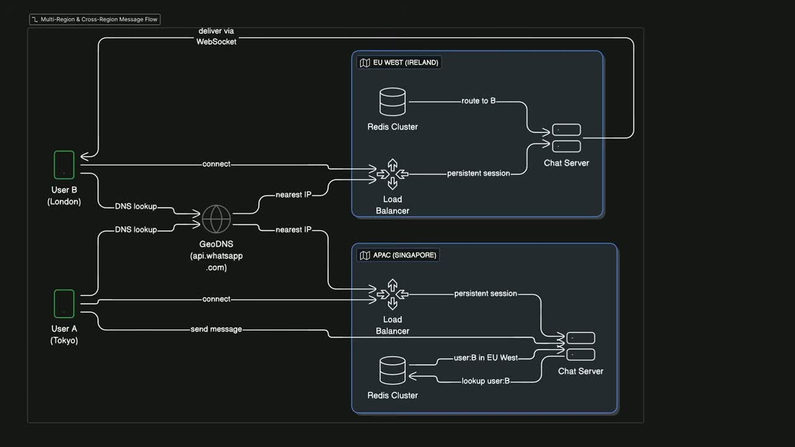
Feature flags and gradual rollouts 3:11:14
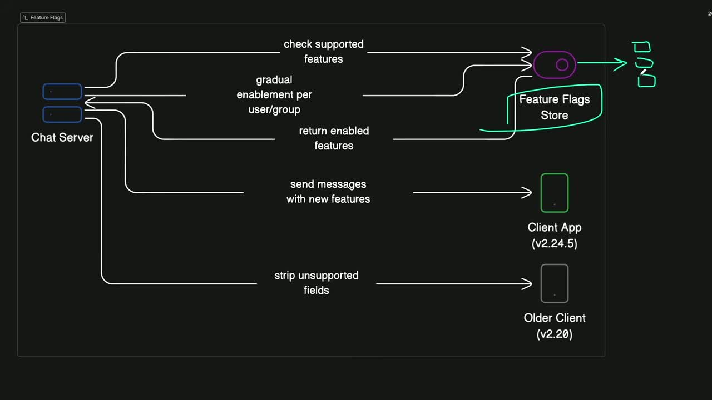
How to actually get better
- Start simple, every time: requirements → estimates → high-level design → identify bottlenecks → discuss trade-offs. The estimates tell you whether a Kafka broker or database sharding is even needed.
- It's a flow, not a script. You can't memorize whole designs; know the steps and adapt per system.
- Every decision has costs. WebSockets use more memory than HTTP but give real-time delivery — worth it for a messenger, maybe not for your app. Be ready to argue both sides.
- Drill back-of-the-envelope math until the unit conversions are reflexive, and check your answers.
- Failure analysis comes last — after components and flows are stable, not before.
- Perfection is not the bar. Nobody designs a perfect system in one or two hours. Interviewers watch how you think, whether you discuss trade-offs or just pick favorites. Say your reasoning out loud — it keeps you honest, and a wrong path gets corrected by hints.
Cheat sheet
SELECT … FOR UPDATE on the inventory rows (READ COMMITTED + row locks) or SERIALIZABLE at low TPS. Inventory table: one row per (hotel, room type, date); overbooking = raise the effective limit ~10%.Glossary
total_inventory) because some bookings reliably cancel. Modeled by comparing total_reserved + rooms_to_book against an inflated limit.Check your recall
Try to answer first, then reveal. (These test the ideas, not trivia.)
room_type_inventory keyed by (hotel, room type, date) instead of just counting rooms rows?user_id and then duplicate each conversation into both participants' shards — and what should you have clarified in requirements first?Sources and notes
Primary source
- Design Software Systems Like a Senior Engineer – Complete Course — freeCodeCamp.org, course by Hayk Simonyan (3 h 16 min). Everything attributed to “the course,” with an inline timestamp, comes from this recording; diagrams are screenshots of its slides and whiteboard frames.
Supporting research added by this guide
Additions beyond the video are labeled in place (“From the research,” or parenthetical source notes). Everything else is the course's teaching.
- Booking Holdings FY2024 results — 1.1 billion room nights in 2024; company factsheet (~1.2B in 2025) — corroborating the video's 1.1B/year input.
- PostgreSQL: transaction isolation and row-level locking (FOR UPDATE) — confirming READ COMMITTED as the default and the row-lock semantics the course relies on.
- Signal: X3DH key agreement, Double Ratchet algorithm, PQXDH (newer post-quantum handshake), and the WhatsApp encryption overview — background for the E2EE chapter's research note.
- Elasticsearch similarity modules (BM25 default) — naming the relevance algorithm the video leaves unnamed.
- RFC 6455 (WebSocket), MDN WebSockets API, AWS S3 pre-signed URLs, Debezium documentation, Consul documentation, Xiph.org Vorbis (OGG), SimilarWeb — standards and vendor references for tools the course mentions by name.
Transcription and accuracy notes
- The auto-generated captions garble several tool names; this guide uses the correct forms verified against on-screen slides: Redis (not “radius/radies”), PostgreSQL (not “poss/postcarql”), OGG (not “OG”), CAP theorem (not “CP theorem”), Debezium (the slide names it; the captions say “bases connector”), and 99.9%+ uptime (captions say “free 9”; the slide at 0:57:50 says 99.9%+).
- Two code listings are labeled reconstructions from narration (the token-bucket limiter and the availability-check pseudocode); the SELECT FOR UPDATE, fallback, and reservation-body listings are transcribed from on-screen slides. Simplified listings are marked as such.
- The full transcript and the recording remain working inputs under
.work/in the repository and are not published with this guide.
Study guide generated from the freeCodeCamp course by Hayk Simonyan. Watch the original for the full walkthrough: Design Software Systems Like a Senior Engineer ↗
← Back to the library